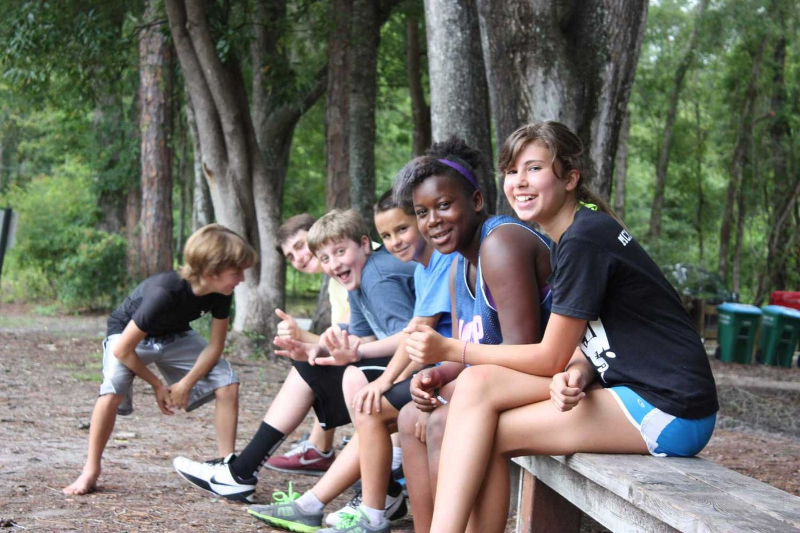

PreK–1st grade
By using outdoor spaces and giving ample play time alongside a traditional academic curriculum, the school aims to build a foundation that fosters a love of learning from a young age.
Programs
Morning academics, afternoon electives, and a campus that is treated as a learning resource. Classrooms are multi-age, and the mix can change from year to year.
By using outdoor spaces and giving ample play time alongside a traditional academic curriculum, the school aims to build a foundation that fosters a love of learning from a young age.
Students keep preparing academically for middle school and are given more leadership opportunities, with a focus on well-rounded, thoughtful students.
Middle school subscribes to a “work hard, play hard” mindset. The school says graduates leave prepared for the next chapter, with the tools to flourish.
The school follows its own calendar and tends to parallel local public school holidays. There is no school bus. Families can ask for help finding a carpool.

The FAQ lists examples, not a fixed menu: sports, karaoke, African drumming and dance, nature exploration, pottery, ukulele, doo-wop, drama, tennis, swimming, sewing, computer programming, sushi making, basketball, chorus, gardening, Ping Pong, and Random Act of Kindness.
Recent newsletters have linked that term’s elective lists. Those PDFs are on the calendar and news page.
The school says most graduates enroll in high school magnet programs, including Eastside’s International Baccalaureate program, Gainesville High School’s Cambridge program, and P.K. Yonge’s performing arts program. Others enroll in public and private high schools in and around Gainesville.
To schedule a tour, call (352) 495-2728 or send a message through the school’s information form. Applications and camp registration use the forms already on jordanglen.org.